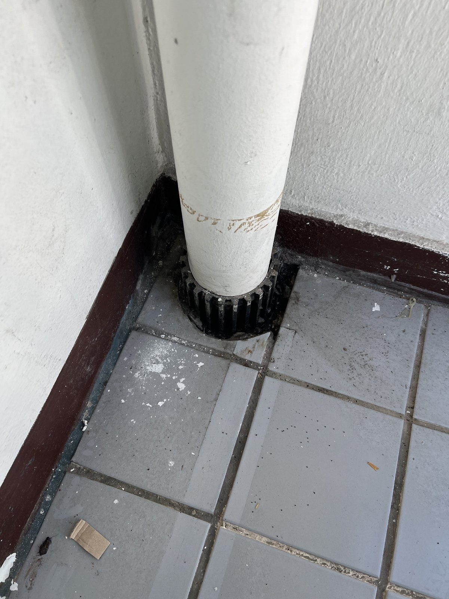
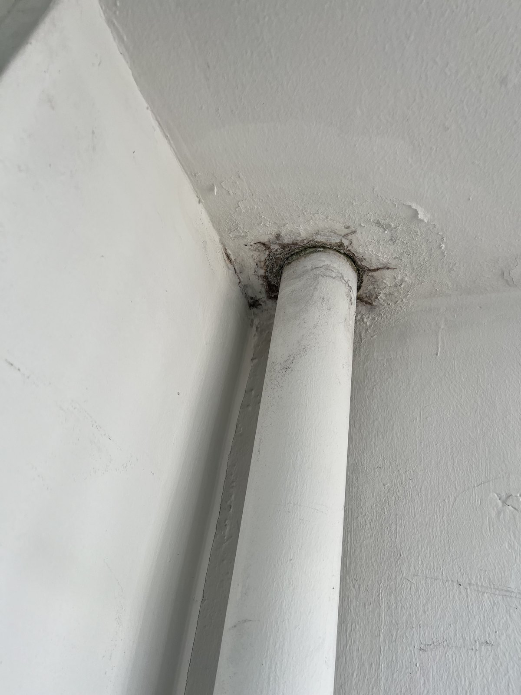
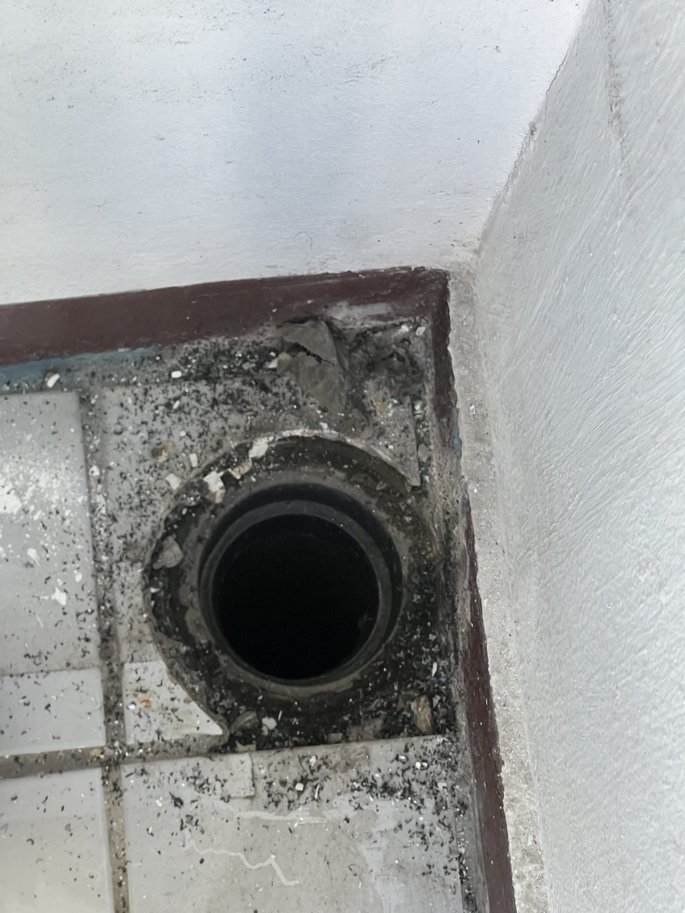
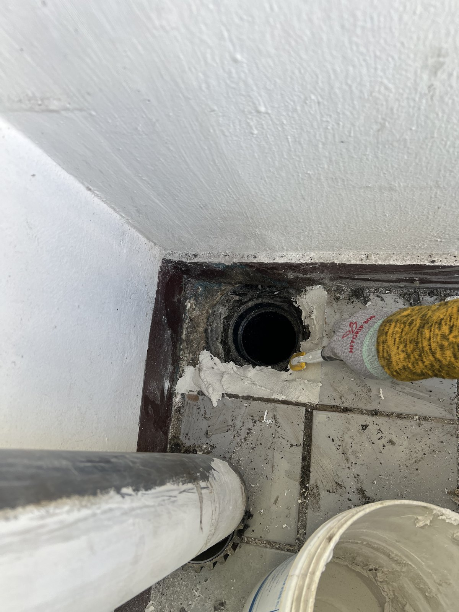
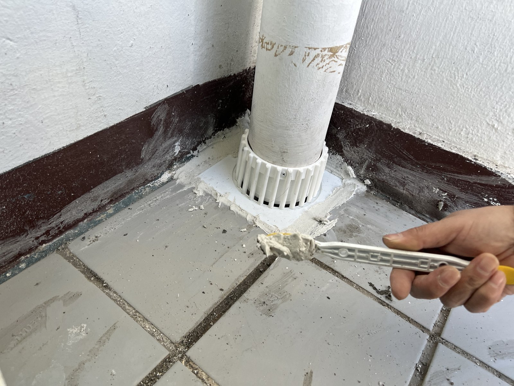
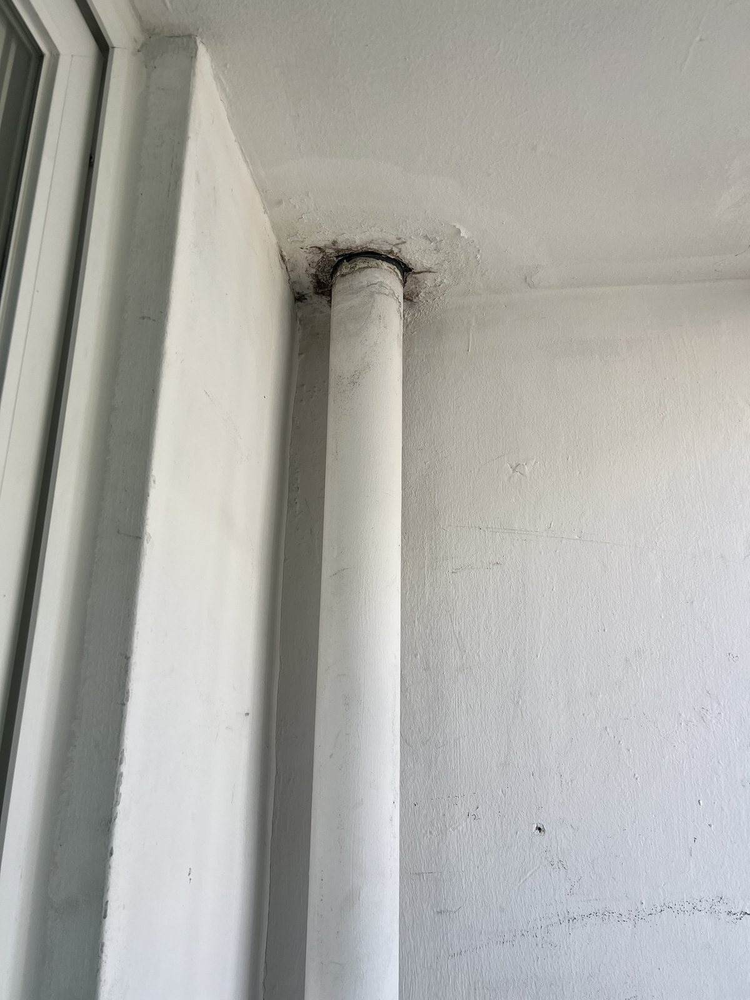

대전 법동 삼호아파트 베란다 우수관 하부 교체｜검은 하부 부속을 새 흰색 부속으로

작업 핵심
현장 작업 한눈에 보기
- 현장
- 대전 법동 삼호아파트 · 베란다 우수관
- 문제
- 우수관 하부 부속
바닥 연결 입구 둘레 - 작업
- 기존 하부 부속 철거·관 분리
연결 입구 둘레 메움·새 하부 부속 마감 - 결과
- 새 하부 부속과 바닥 마감 사진 확인
통수시험 수치·소요시간은 미기재
대전 대덕구 법동 삼호아파트 베란다 작업입니다. 우수관 바닥 쪽의 검은 하부 부속을 걷어 내고, 바닥 연결 입구 둘레를 메운 뒤 새 흰색 하부 부속으로 마감했습니다. 실제 사진 7장으로 소개합니다.
1. 작업 전 우수관 바닥 쪽
대전 대덕구 법동 삼호아파트 베란다 작업입니다. 2026년 11월 10일 오후 사진을 순서대로 소개합니다.
작업 전 우수관 바닥 쪽입니다. 관 아래에 톱니 모양의 검은 하부 부속이 끼워져 있었습니다.

2. 천장 쪽 관이 지나는 자리
같은 우수관의 천장 쪽입니다. 관이 천장을 지나는 자리 둘레가 검게 얼룩져 있었습니다.

3. 바닥 연결 입구
관을 옮기고 하부 부속을 걷어 내자 바닥의 연결 입구가 드러났습니다.

4. 입구 둘레 메우기
빼낸 관은 옆에 눕혀 두고, 연결 입구 둘레를 흰색 재료로 메웠습니다.

5. 새 하부 부속 끼우기
관 아래에 새 흰색 하부 부속을 끼워 다시 세우고, 둘레를 헤라로 고르게 펴 발랐습니다.

6. 다시 세운 우수관
다시 세운 우수관을 바닥에서 천장 쪽으로 본 모습입니다.

7. 마무리
마무리한 모습입니다. 검은 하부 부속이 있던 자리에 새 흰색 하부 부속이 들어가고, 바닥 둘레도 흰색으로 마감됐습니다. 1번 사진과 비교해 보세요.
8. 확인한 범위와 상담 안내
이번 기록은 사진으로 확인되는 공정 범위입니다. 통수시험 수치와 총 작업시간은 자료가 없어 적지 않았습니다.
베란다 우수관 바닥 쪽에 물 자국이 보이거나 부속이 삭아 보이면, 관 하부와 천장 쪽을 각각 찍어 상담해 주세요.